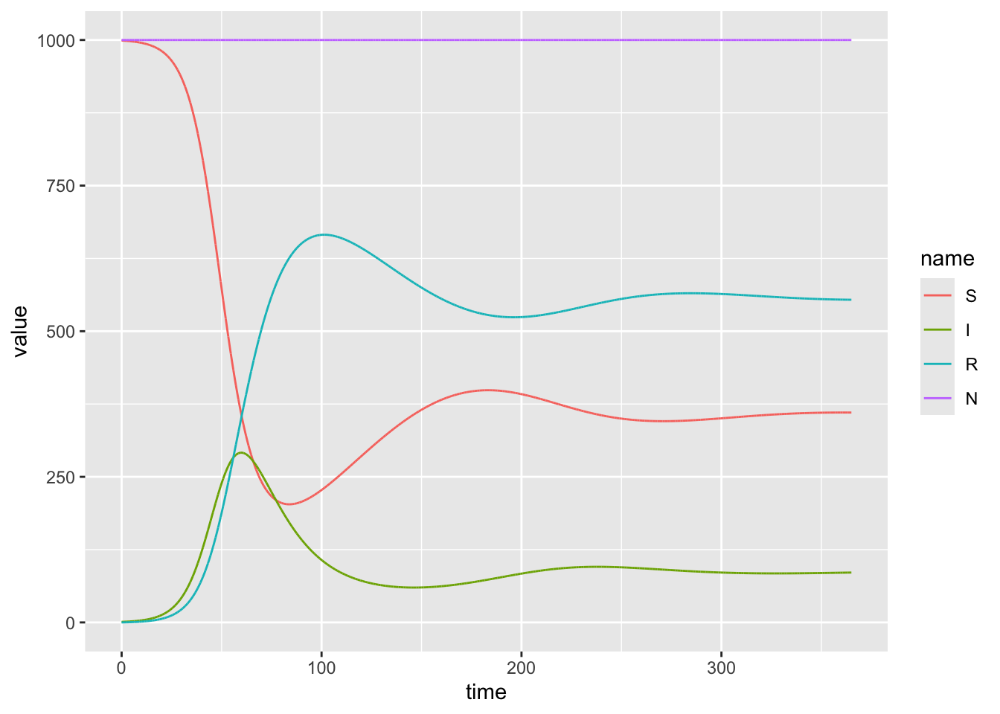
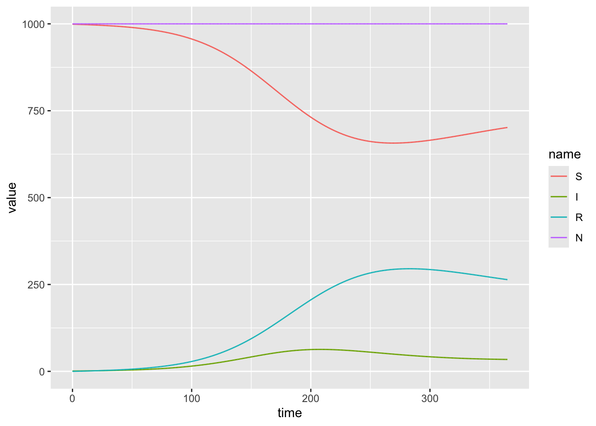
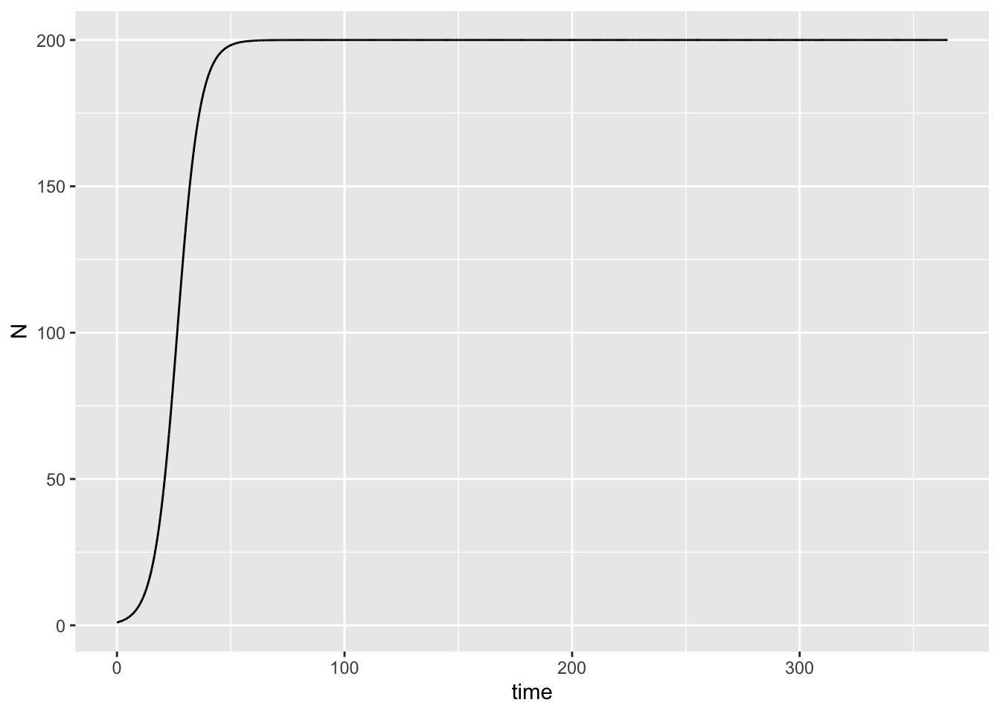
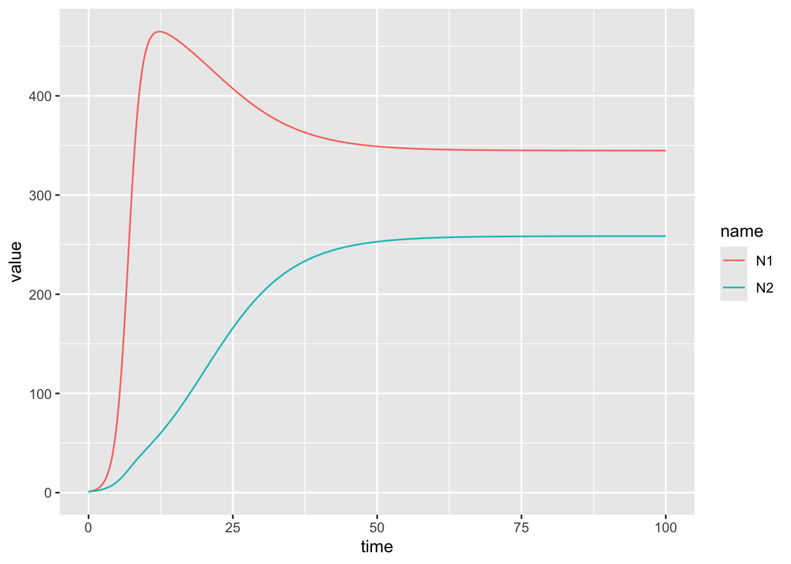
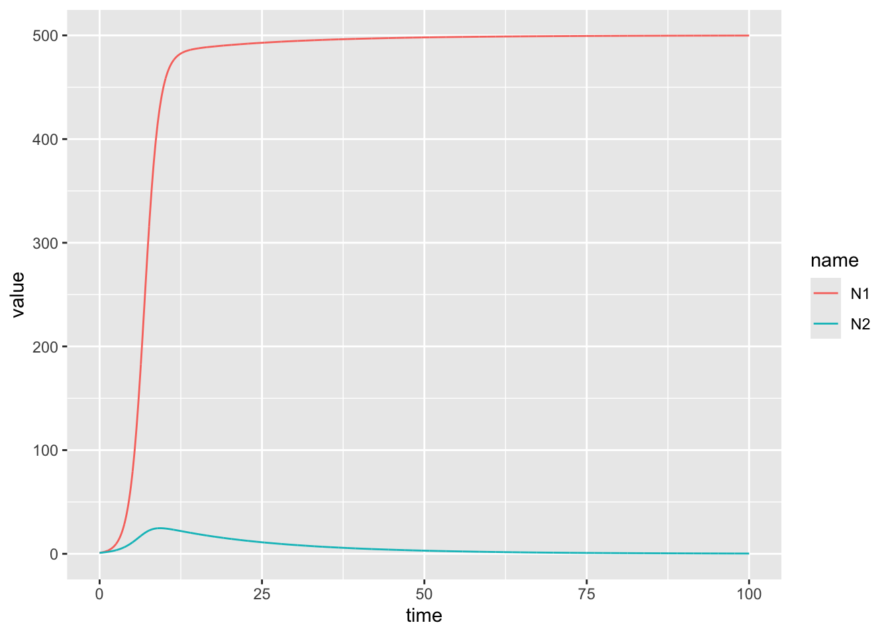
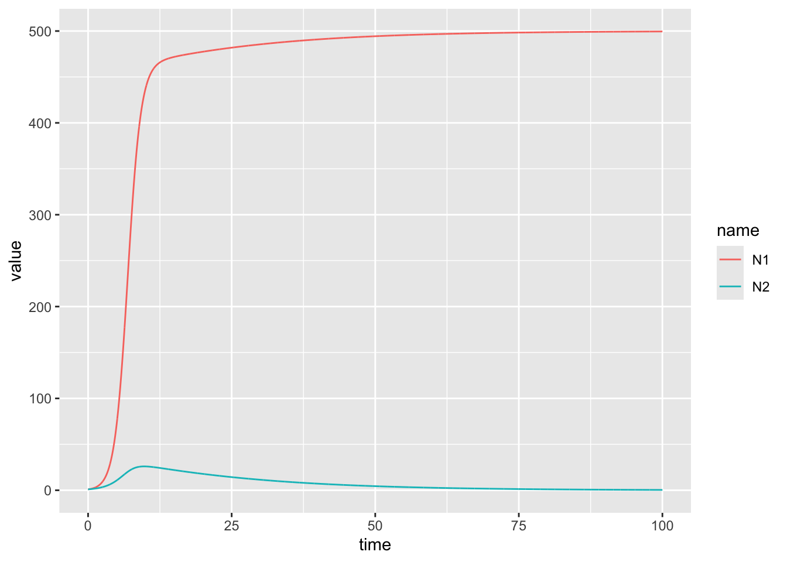
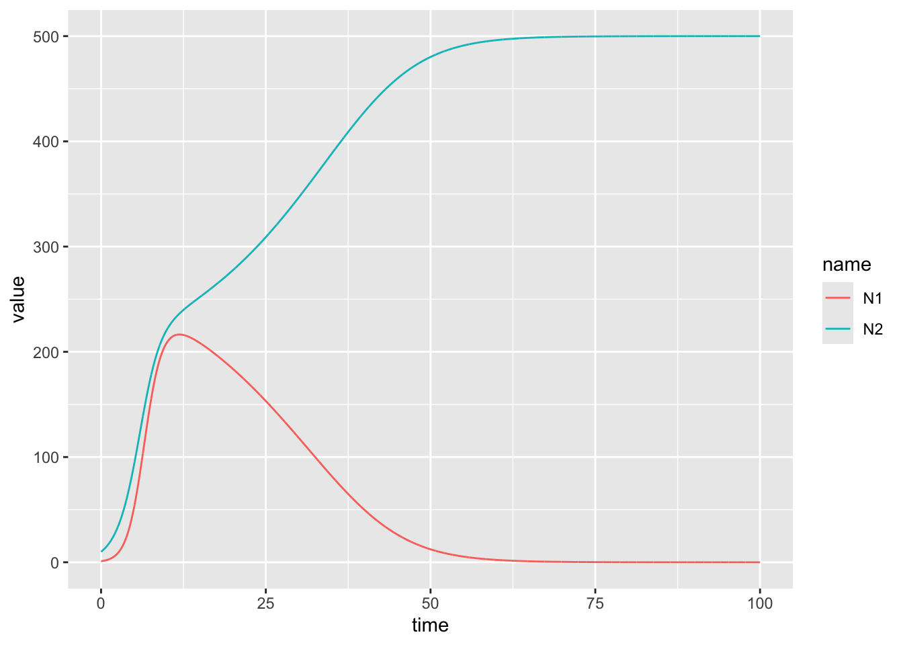
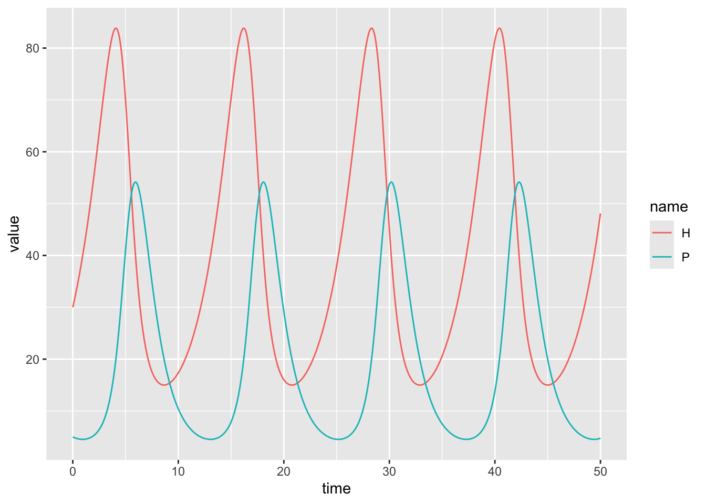
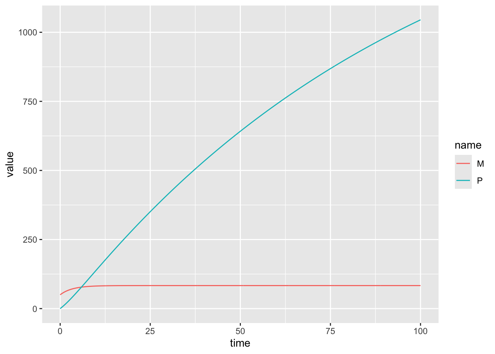
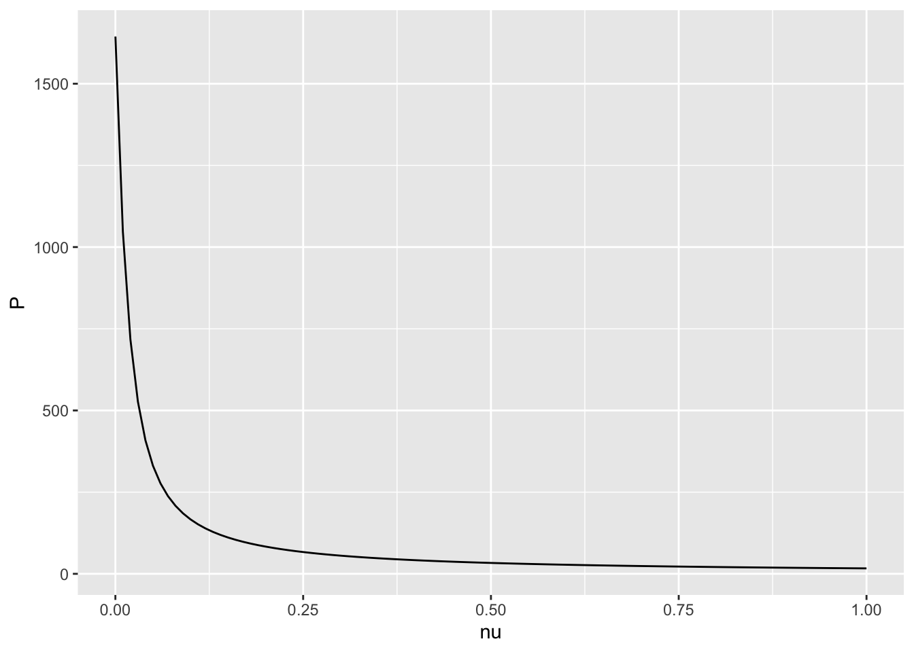

library(tidyverse)
require(deSolve)13 Influential models in biology: Infection, competition, and protein production
13.1 Lesson preamble
13.1.1 Learning Objectives
Become familiar with popular mathematical models across biology
Move from single variable to multi-variable models
Understand the connection between discrete time and continuous time models
Gain familiarity with interpreting and creating ordinary differential equations
Use the
odefunction indeSolveto numerically integrate differential equationsUnderstand the range of processes that regulate population size from the molecular to species scales
13.2 Introduction
In Lecture 12, we saw how we could create simple mathematical models for population growth and simulate those models computationally. In this class, we’ll expand on that modeling approach, in two directions
we’ll move from models where population changes only happen at discrete intervals or “generations”, to models where changes happen continuously
we’ll move from models considering the dynamics of only a single type of organisms to those including multiple types or multiple species
When constructing models, our first step is always to think about the biology and our research questions, and use that to inform the model design. Our second step is then figuring out how to actually encode the model mathematically and - usually - simulate it computationally. Our approach here depends on some key features of the system. We’ve provided a table below to guide you in this process
13.2.1 Determining the approach to model simulation
| Discrete time: Population size only changes at specific times | Continuous time: Population size can change continuously | |
| Deterministic: Changes either occur in completely predictable ways OR occur rapidly and in large populations OR we are only interested in the average population size | Use discrete time recursive equation | Use an ordinary differential equation |
| Stochastic: Changes occur probabalistically AND either population size is small or rates are low AND we are interested in variation from average sizes | Use discrete-time stochastic simulation | Use a continuous time stochastic simulation (e.g., Gillespie algorithm/first reaction method, Gibson next reaction method) |
13.3 Example 1: “SIR” model of infectious disease transmission
The Susceptible-Infected-Recovered (SIR) model describes how an immunizing infection spreads through a closed population of hosts. Variants of this model can be used to study almost an infectious disease of any organism. In our Outbreak Investigation exercise, we introduced one of the simplest possible SIR models (in the slide deck) and then saw an example of how this model was adapted to COVID-19. Here we’ll go back to this very simple version to go over how we generated the model output

The model tracks the number of susceptible \(S\), infected \(I\), and recovered \(R\) individuals in continuous time. Each susceptible individual contacts infected individuals and acquires the infection via transmission at rate \(\beta\). Infected indivduals recover from infection, and gain immunity at rate \(\gamma\). In this version of the model, we assume immunity is not life-long, but wanes at a rate \(\omega\), leading individuals to become susceptible again.
Note: This version is often called the “SIRS” model, as opposed to the “SIR” model with \(\omega = 0\).
The model is as follows:
\[\frac{dS}{dt} = \omega R - \beta S I \] \[\frac{dI}{dt} = \beta S I - \gamma I\] \[\frac{dR}{dt} = \gamma I - \omega R\]
Remember that the derivative term (e.g., \(dI/dt\)) is the instantaneous rate of change of the number of individuals in that compartment (e.g., exactly 72 hours after the outbreak starts, the number of infected individuals is increasing at a rate of 0.2 per hour).
Note: The total population size is \(N = S + I + R\). Since no individuals enter or leave the population (we’ve ignored birth or death here) \(dN/dt = 0\), and the population size is constant. So, if we wanted to, we could actually simplify our system and ignore the \(R\) equation (since \(R = N - S - I\)).
Below we solve the system and plot the dynamics for a specific set of parameter values.
N <- 1000 # population size
t_max <- 365 # time to simulate for
# define parameters
gamma <- 1/14 # mean infectious period = 14 days
beta <- 0.0002 # transmission rate
omega <- 1/90 # average duration of immunity is 90 days
# put parameter values into vector test_params
test_params <- c(beta = beta, gamma = gamma, omega = omega)
initialI <- 1
ic <- c(S=N-initialI, I=initialI, R = 0) # define initial conditions
# define times to save
t_vec <- seq(0, t_max, 0.01)
# define the model!
sir <- function(t, y, parms){
with(as.list(c(y,parms)),{
dS <- omega*R - beta*S*I
dI <- beta*S*I - gamma*I
dR <- gamma*I - omega*R
return(list(c(dS, dI, dR)))
})
}
# numerically integrate equations!
model_output <- as.data.frame(ode(y = ic, times = t_vec, func = sir, parms = test_params))
head(model_output) time S I R
1 0.00 999.000 1.000000 0.0000000000
2 0.01 998.998 1.001285 0.0007147048
3 0.02 998.996 1.002571 0.0014302482
4 0.03 998.994 1.003859 0.0021466314
5 0.04 998.992 1.005148 0.0028638552
6 0.05 998.990 1.006439 0.0035819210model_output <- model_output %>%
mutate(N = S + I + R) %>%
pivot_longer(! time) %>% # take all the columns other than time and put in long format
mutate(name = factor(name, levels = c("S","I","R","N"))) # want them to plot in this order
head(model_output)# A tibble: 6 × 3
time name value
<dbl> <fct> <dbl>
1 0 S 999
2 0 I 1
3 0 R 0
4 0 N 1000
5 0.01 S 999.
6 0.01 I 1.00model_output %>%
ggplot(aes(x = time, y = value, color = name)) +
geom_line()
If we want to determine the peak epidemic size, and time at which the peak occurs:
model_output %>%
group_by(name) %>%
summarize(maxValue = max(value),
timeMax = time[which.max(value)]
)# A tibble: 4 × 3
name maxValue timeMax
<fct> <dbl> <dbl>
1 S 999 0
2 I 291. 59.9
3 R 666. 101.
4 N 1000. 365. 13.3.0.1 Challenge
Use a value of \(\beta\) that is half the size of the above example. Describe 3 properties of the epidemic that change
# peak occurs later
# peak is lower
# less reduction in susceptible individuals
# lower final endemic size
beta2 <- 0.0001
test_params2 <- c(beta = beta2, gamma = gamma, omega = omega)
model_output2 <- as.data.frame(ode(y = ic, times = t_vec, func = sir, parms = test_params2)) %>%
mutate(N = S + I + R) %>%
pivot_longer(! time) %>% # take all the columns other than time and put in long format
mutate(name = factor(name, levels = c("S","I","R","N"))) # want them to plot in this order
model_output2%>%
ggplot(aes(x = time, y = value, color = name)) +
geom_line()
Infectious disease models are almost always associated with an important “meta-parameter” \(R_0\) (a function of other parameters), that determines many of the properties of the outcomes.
The quantity \(R_0\) describes the average number of secondary infections from a single infectious individual in an otherwise susceptible population. Intuitively, if the pathogen is unable to infect \(>1\) individual on average when the susceptible pool has not yet been depleted (i.e., all individuals are susceptible), it will fail to spread. If \(R_0 > 1\), then the disease will spread.
There are formal mathematical methods to derive \(R_0\) from the differential equations for any infection model, which we won’t cover here. \(R_0\) also has several nice mathematical properties (e.g., determines both the existence and stability of the infected equilibrium, and therefore describes a transcritical bifurcation). For now, we can simply state the value of \(R_0\) for this simple SIR model
\[R_0 = \frac{\beta N}{\gamma}\]
Notice how the rate of recovery (i.e. loss of infectiousness) reduces the reproductive value of the pathogen; intuitively, this is because the faster an infected individual recovers the fewer people they can transmit.
We can calculate \(R_0\) for the last parameter values we used
R0 <- beta*N/gamma; R0[1] 2.813.3.0.2 Challenge
Run a version of the simulation with \(R_0 <1\). Confirm that even if you start with a high portion of the population infected, the disease always goes extinct quickly
beta3 <- 0.00005
R0 <- beta3*N/gamma;
print(R0)[1] 0.7test_params3 <- c(beta = beta3, gamma = gamma, omega = omega)
initialI3 <- 100
ic3 <- c(S=N-initialI3, I=initialI3, R = 0) # define initial conditions
model_output3 <- as.data.frame(ode(y = ic3, times = t_vec, func = sir, parms = test_params3)) %>%
mutate(N = S + I + R) %>%
pivot_longer(! time) %>% # take all the columns other than time and put in long format
mutate(name = factor(name, levels = c("S","I","R","N"))) # want them to plot in this order
model_output3%>%
ggplot(aes(x = time, y = value, color = name)) +
geom_line()
13.4 Example 2: Models of density-dependent growth and interactions between species
In our prior modeling lecture, we considered the simplest possible model of population growth: constant per capita rates of birth and death, which results in exponential growth (or decay) at a net rate \(r\)
In reality, there’s very few situations where populations can really grow exponentially, uninhibited, for very long. Instead, we tend to see density-dependent growth: as the population size increases, the effective growth rate decreases. This is typically modeled using a simple logistic equation,
\[ \frac{dN}{dt} = r N (1 - \frac{N}{K}) \]
here the the growth decreases linearly with population size, reaching a minimum value of 0 at the population carrying capacity, \(N\).
Density-dependent growth is seen in biological systems across multiple scales, from protein concentrations in a cell, to levels of red and white blood cells in the body, to the growth of microorganisms, plants, and large animals in lab and wild environments.
There are multiple proposed explanations for density-dependent growth, with different mechanisms, or a combination of them, at play in any particular system
resource limitation
self-regulation
spatial constraints
competition
predators
disease
N0 <- 1 # initial population size
t_max <- 365 # time to simulate for
# define parameters
r <- 0.2
K <- 200
# put parameter values into vector test_params
test_params <- c(r = r, K = K)
# define times to save
t_vec <- seq(0, t_max, 0.01)
ic <- c(N = N0)
# define the model!
growth_dd <- function(t, y, parms){
with(as.list(c(y,parms)),{
dN <- r*N*(1-N/K)
return(list(c(dN)))
})
}
# numerically integrate equations!
model_output <- as.data.frame(ode(y = ic, times = t_vec, func = growth_dd, parms = test_params))
model_output %>%
ggplot(aes(x = time, y = N)) +
geom_line()
13.4.1 Inter-species competition
Single species rarely exist in isolation, and one component of growth regulation in many species is interactions with other species.
One type of interaction is competition, whereby the growth rate of species A is regulated not only by the density of species A but also by the density of species B. One of the simplest and yet most powerful model of inter-species competition, which has been used to interpret biological data for nearly 100 years, is a Lotka-Volterra model
\[ \frac{d N_1}{dt} = r_1 \frac{N_1}{K_1} (K_1 - N_1 - \alpha_{12} N_2) \]
\[ \frac{d N_2}{dt} = r_2 \frac{N_2}{K_2} (K_2 - N_2 - \alpha_{21} N_1) \]
where \(K_i\) is the carrying capacity of species \(i\) in the absence of species \(j\), and \(\alpha_{ij}\) gives the relative effect of species \(j\) on the population growth of species \(i\), compared to the effect of species \(i\) on its own population growth.
13.4.1.1 Challenge
What is the effective new carrying capacity of species 1 in this model? That is, what is the value of \(N_1\) at which species 1 stops growing?
Answer
The rate of change is zero ( \(\frac{d N_1}{dt} = 0\) ) when the terms in the brackets are zero:
\[ K_1 - N_1 - \alpha_{12} N_2 = 0 \]
which implies the population size at carrying capacity is
\[ N_1 = K_1 - \alpha_{12} N_2 \]
This model has been used to explore fundamental questions in ecology, such as
Can we predict - or understand - how much th equilibrium level of each species would be reduced by the other?
When will both species co-exist?
When will one species eliminate the other?
N0_1 <- 1 # initial population size
N0_2 <-1
t_max <- 100 # time to simulate for
# define parameters
r1 <- 0.9
r2 <- 0.5
a12 <- 0.6
a21<-0.7
K1 <- 500
K2 <- 500
# put parameter values into vector test_params
test_params <- c(r1 = r1, K1 = K1, a12 = a12, r2 = r2, K2 = K2, a21 = a21)
# define times to save
t_vec <- seq(0, t_max, 0.01)
ic <- c(N1 = N0_1, N2 = N0_2)
# define the model!
lv_comp <- function(t, y, parms){
with(as.list(c(y,parms)),{
dN1 <- r1*(N1/K1)*(K1-N1-a12*N2)
dN2 <- r2*(N2/K2)*(K2-N2-a21*N1)
return(list(c(dN1,dN2)))
})
}
# numerically integrate equations!
model_output <- as.data.frame(ode(y = ic, times = t_vec, func = lv_comp, parms = test_params))
model_output <- model_output %>%
pivot_longer(! time)# take all the columns other than time and put in long format
model_output %>%
ggplot(aes(x = time, y = value, color = name)) +
geom_line()
13.4.1.2 Challenge
Plot this for a different set of parameters (change \(\alpha_{21}\) to 1.1). What changes about the outcome?
a21<-1.1
test_params <- c(r1 = r1, K1 = K1, a12 = a12, r2 = r2, K2 = K2, a21 = a21)
model_output <- as.data.frame(ode(y = ic, times = t_vec, func = lv_comp, parms = test_params))
model_output <- model_output %>%
pivot_longer(! time)# take all the columns other than time and put in long format
model_output %>%
ggplot(aes(x = time, y = value, color = name)) +
geom_line()
# This is an example of competetive exclusion!Now try for \(\alpha_{12} = 1.2\) and \(\alpha_{21} = 1.1\). Test once with the current(equal) initial conditions, and another where you start species 2 at 10x higher level. Notice any differences?
a12<-1.2
a21<-1.1
test_params <- c(r1 = r1, K1 = K1, a12 = a12, r2 = r2, K2 = K2, a21 = a21)
model_output <- as.data.frame(ode(y = ic, times = t_vec, func = lv_comp, parms = test_params))
model_output <- model_output %>%
pivot_longer(! time)# take all the columns other than time and put in long format
model_output %>%
ggplot(aes(x = time, y = value, color = name)) +
geom_line()
N0_1 <- 1 # initial population size
N0_2 <- 10
ic <- c(N1 = N0_1, N2 = N0_2)
model_output <- as.data.frame(ode(y = ic, times = t_vec, func = lv_comp, parms = test_params))
model_output <- model_output %>%
pivot_longer(! time)# take all the columns other than time and put in long format
model_output %>%
ggplot(aes(x = time, y = value, color = name)) +
geom_line()
13.4.2 Predator-prey interactions
In the example above, both species had negative effects on the other species’ growth. However, there are many other sorts of inter-species interactions. Another interesting example which was the subject of early mathematical models in biology is predator-prey interactions, in which on species (predator) benefits from increasing levels of the other, while the other (prey) is harmed by the presence of the other.
The classic example of predator-prey interactions that inspired some of the earliest use of these models is observed in a longitudinal dataset on the abundance of snowshoe hare and Canadian lynx in the Hudson Bay watershed. It had long been observed that hare showed extreme fluctuations from year to year and apparent periodic cycles in abudence, and in 1937 D. MacLulich from U of T biology published a comprehensive book on this topic. He compiled records of hare and lynx abundance from records of pelts exported by the Hudson Bay Company as well as surveys by hunters and land users around the country. The timeseries were digitized by Prof. Douglas Hundley at Whitman College 1 and shown is below
hare_lynx <- read_delim("http://people.whitman.edu/~hundledr/courses/M250F03/LynxHare.txt", delim = " ", col_names = c("year", "hare", "lynx"))Rows: 91 Columns: 4
── Column specification ────────────────────────────────────────────────────────
Delimiter: " "
dbl (3): year, hare, lynx
lgl (1): X4
ℹ Use `spec()` to retrieve the full column specification for this data.
ℹ Specify the column types or set `show_col_types = FALSE` to quiet this message.hare_lynx <- hare_lynx %>%
select(1:3) %>%
pivot_longer(cols = !year, names_to = "animal", values_to = "abundance")
hare_lynx %>% ggplot(aes(x = year, y = abundance, color = animal)) +
geom_line() +
labs(y = "Abundance (thousands)")
We can see several interesting trends here: both hare and lynx levels fluctuate dramatically, and appear to oscillate with a period somewhere around 10 years. Increases in hare levels are usually followed by increases in lynx levels, which in turn are followed by decreases in hare levels and later decreases in lynx.
We can create a simple model of predator-prey interactions to understand these dynamics, under the following simplifying assumptions:
In the absence of predator, the prey grows exponentially
In the absence of prey, the predator dies of exponentially
The “per predator” rate at which prey are killed is a linear function of the number of prey
Each prey death contributes identically to the growth of the predator population
Let \(P\) be the predator population and \(H\) be the prey population:
\[ \frac{dH}{dt} = r H - b H P \]
\[ \frac{dP}{dt} = c H P - k P \]
Somewhat confusingly, this model is also called a Lotka-Volterra model (in fact, we can create more general models that consider all possible modes of competition)
Let’s create a simple simulation!
13.4.2.1 Challenge
Fill in the missing parts of the code to create a simulation where you can clearly see a few cycles of oscillations
H0 <-30 # initial population size
P0 <- 5
t_max <- 50 # time to simulate for
# define parameters
r <- 0.4
b <- 0.02
c <- 0.02
k <- 0.8
# put parameter values into vector test_params
test_params <- c(r = r, b = b, c = c, k = k)
# define times to save
t_vec <- seq(0, t_max, 0.01)
ic <- c(H = H0, P=P0)
# define the model!
lv_pred_prey <- function(t, y, parms){
with(as.list(c(y,parms)),{
dH <- r*H - b*H*P
dP <- c*H*P - k*P
return(list(c(dH,dP)))
})
}
# numerically integrate equations!
model_output <- as.data.frame(ode(y = ic, times = t_vec, func = lv_pred_prey, parms = test_params))
model_output <- model_output %>%
pivot_longer(! time)# take all the columns other than time and put in long format
model_output %>%
ggplot(aes(x = time, y = value, color = name)) +
geom_line()
13.5 Example 3: mRNA and protein production
Let \(M\) be the number of mRNAs in a cell and \(P\) be the number of proteins that are made from that mRNA. The following model describes the process of gene expression:
\[\frac{d M}{d t} = \mu - \gamma M - \beta M\] \[\frac{d P}{d t} = \beta M - \nu P\]
13.5.0.1 Challenge
Match the description of the biological parameter in the table below with the symbol from the model equations (e.g., \(\mu, \gamma, \beta, \nu\))
| Parameter description | Parameter name |
|---|---|
| mRNA production rate | |
| mRNA degradation rate | |
| Translation rate | |
| Protein degradation rate |
13.5.0.2 Challenge
Numerically solve this system of equations from time \(t=0\) to time \(t=100\) in increments of 0.1. Use the following parameter values: \(\mu = 25, \gamma = 0.1, \beta = 0.2, \nu = 0.01, M(0) = 50, P(0) = 0\).
Plot \(M(t)\) from \(t=0\) to \(t=100\).
t_max <- 100
t_vec <- seq(0,t_max,by=0.1)
model <- function(time, state, parameters){
with(as.list(c(state, parameters)),
{
dM <- mu - gamma*M - beta*M
dP <- beta*M - nu*P
return(list(c(dM, dP)))
}
)
}
test_params <- c(mu = 25, gamma = 0.1, beta = 0.2, nu = 0.01)
ic <- c(M = 50, P = 0)
model_output <- ode(y = ic, times = t_vec, func = model, parms = test_params)
model_output <- as.data.frame(model_output)
head(model_output) time M P
1 0.0 50.00000 0.000000
2 0.1 50.98515 1.009398
3 0.2 51.94118 2.037190
4 0.3 52.86896 3.082779
5 0.4 53.76931 4.145595
6 0.5 54.64306 5.225078model_output %>% pivot_longer(!time) %>%
ggplot(aes(x = time, y = value, color = name)) +
geom_line()
When we want to visualize the full time course of the population dynamics for all variables, viewing all the output of the differential equation is a great strategy. However, we are limited to viewing the results for a single parameter set (or maybe, a few sets, if we want to add multiples sets of lines to the same graph, but things get messy fast!). Sometimes we might only be interested in the outcome at a particular time, and we might be more interested in how that value depends on the model parameters.
For example, if we wanted to examine the eventual amount of protein (at time \(t=100\)) as a function of the protein degradation rate \(\nu\), keeping the initial conditions and all other parameters constant, we can write code for that:
# function to calculate model output for a given nu value
get_protein_level <- function(nu){
test_params <- c(mu = 25, gamma = 0.1, beta = 0.2, nu = nu)
ic <- c(M = 50, P = 0)
model_output <- as.data.frame(ode(y = ic, times = t_vec, func = model, parms = test_params))
return(tail(model_output$P, 1))
}
# code to loop over nu values
nu_vec <- seq(0,1,0.01)
protein_levels <- rep(0,length(nu_vec))
i <- 1
for (nu in nu_vec){
protein_levels[i] <- get_protein_level(nu)
i <- i+1
}
protein.df <- data.frame(nu = nu_vec,P = protein_levels)
head(protein.df) nu P
1 0.00 1644.4444
2 0.01 1045.0773
3 0.02 717.3317
4 0.03 526.6668
5 0.04 408.5655
6 0.05 330.9077protein.df %>%
ggplot(aes(x = nu, y = P)) +
geom_line()
Hint: to check if your answer is correct, see if it matches your intuition about how protein concentrations should change as the rate of degradation increases.
13.6 Further reading
Sarah Otto & Troy Day, “A Biologists Guide to Mathematical Modeling in Ecology & Evolution”. 2007. Princeton University Press (A comprehensive treatment of many types of mathematical models in biology)
Alan Hastings, “Population Biology: Concepts & Methods”. 1997. Springer Nature (A short and easy to read book that is the source of some of the examples here and goes into more math detail if interested)
Roy Anderson & Robert May, “Infectious Diseases of Humans: Dynamics & Control”. 1991. Oxford University Press